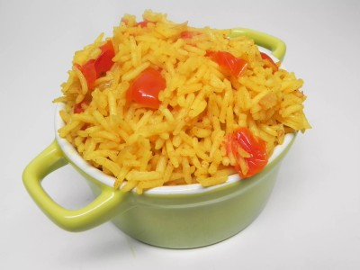

This yummy South Indian dish is a common staple in an Indian household. It is also called 'tomato bath' and is often served alone for breakfast or even a light lunch or supper. It is a favorite of kids (think mac and cheese). Serve with hard-boiled eggs.
Heat oil in a saucepan over medium heat; cook and stir onions until golden, 10 to 15 minutes. Add salt, garlic, chile powder, ginger, and turmeric; stir to coat. Mix tomatoes into onion mixture; cook and stir until tomatoes begin to break down, 5 to 10 minutes.
Stir rice into onion-tomato mixture and pour in water. Bring to a boil; reduce heat to low, cover, and simmer, stirring occasionally, until rice is tender and liquid is absorbed, 15 to 20 minutes.